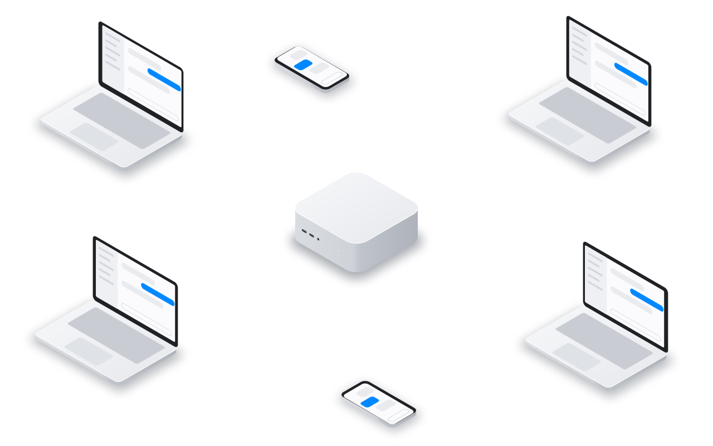

The AI office
Your team's AI office, on one Mac.
Everyone's agents work in the office. Everyone uses them from their own Mac and iPhone.
Free. Needs an Apple silicon Mac with macOS 26.

What your team unlocks.
Agents that do real work for every person in the company.
An agent for every job
A researcher, a bookkeeper, a support writer, each with a workspace.
Shared with colleagues
Share an agent one to one. Each colleague gets their own chat.
A computer of its own
Linux desktops and shells on the office Mac, with files that stay.
Signed in to your tools
Hand an agent a signed-in browser. Take over when it shares a page.
Tools built for you
Agents build dashboards and small apps for your Mac and iPhone.
Work that keeps going
Agents wake on a schedule, and Codex agents can ring your iPhone.


How it works.
The office Mac does the work. Everyone else talks to its agents.
On the office Mac
 Noodle HubRuns everyone's agents
Noodle HubRuns everyone's agents Noodle ComputerGives them computers
Noodle ComputerGives them computers Noodle BrowserKeeps their sign-ins
Noodle BrowserKeeps their sign-ins Noodle AppletRuns what they build
Noodle AppletRuns what they build
On everyone's devices
 NoodleOn each person's Mac
NoodleOn each person's Mac- Noodle MobileOn iPhone and iPad

Your team in Noodle Hub, with the devices each person has paired.
What you need.
A Mac, your AI accounts and your network.

Mac miniSmall and quiet
Mac StudioMore memory for local models
The Mac
Any Mac with Apple silicon and macOS 26, kept on and online.
The AI
Accounts for Codex, Claude Code and others, or local models.
The network
Devices reach the office Mac on site, or from away through your router.
Set up in four steps.
No servers to rent. It all happens in the apps.
Install the Suite
Put all the apps on the office Mac in one go.
Sign in the AI
Sign in once. Plans decide who uses which.
Invite the team
Send invitations. People join from Mac or iPhone.
Make the agents
Give them computers, browsers and tools.
Private, in budget, and free.
On a Mac you own
Agents, sign-ins, computers and browsers stay in the office.
Lend with care
Lending a sign-in shares that account. Check your AI provider's terms.
Spending in check
Plans cap each person's tokens. Usage shows where they go.
Free apps
No seats and no subscription. You pay only for your AI plans.
Open your AI office.
The Suite on the office Mac, then Noodle for everyone.
Noodle SuiteFor the office Mac.Download
 NoodleFor each person's Mac.Download
Noodle MobileFor iPhone and iPad.Join the beta
NoodleFor each person's Mac.Download
Noodle MobileFor iPhone and iPad.Join the beta
Need a hand setting up? Write to us